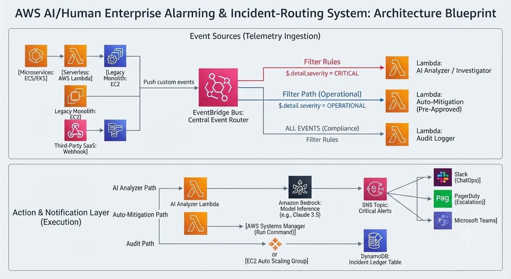

An intelligent, event-driven serverless alerting mesh designed to eliminate alert fatigue, perform autonomous root-cause analysis via Amazon Bedrock, and route incidents dynamically using Amazon EventBridge.

High-level pipeline illustrating event ingestion, EventBridge content filtering, Bedrock AI investigation, and multi-channel routing.
Decouples microservices and legacy monolith telemetry sources. Uses server-side JSON filtering rules to split workflows by severity (e.g., Critical vs. Operational).
Automates initial log triage and metric correlation using advanced foundation models (such as Claude/Nova) before escalating structured findings to human operators.
Enforces strict IAM trust boundaries. All state transitions (Triggered, Acknowledged, Resolved) are immutably recorded in Amazon DynamoDB for post-incident audits.
Every telemetry producer conforms to this strict EventBridge schema payload:
{
"version": "0",
"id": "c6b84733-4b1e-41ec-b13c-932d8471b41d",
"detail-type": "SystemAlarm",
"source": "com.enterprise.monitoring",
"account": "123456789012",
"time": "2026-07-22T04:14:30Z",
"detail": {
"alarmId": "ALRM-9921",
"serviceName": "payment-processor",
"severity": "CRITICAL",
"errorCode": "ERR_DATABASE_DEADLOCK",
"message": "Persistent connection pool exhaustion and transaction lock contention detected."
}
}